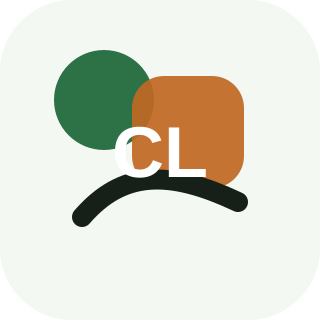

Feature
Issue finder
CivicLink routes resident issues, supports accessible forms, and shows next-step status.

CivicLinkGovtech Service DesignService Design / Front end + data layer
CivicLink routes resident issues, supports accessible forms, and shows next-step status.
Feature
CivicLink routes resident issues, supports accessible forms, and shows next-step status.
Feature
CivicLink routes resident issues, supports accessible forms, and shows next-step status.
Feature
CivicLink routes resident issues, supports accessible forms, and shows next-step status.
Feature
CivicLink routes resident issues, supports accessible forms, and shows next-step status.
Working front end + backend layer
api.json.The live GitHub Pages version uses a static JSON endpoint plus local browser storage to simulate read/write product behavior without collecting client contact details.
API records
Workflow logic
Issue finder
CivicLink uses issue finder to support report issue decisions.
Accessible forms
CivicLink uses accessible forms to support status tracker decisions.
Department routing
CivicLink uses department routing to support case study decisions.
Status language
CivicLink uses status language to support live demo decisions.
Purpose-built product pages
This Govtech Service Design concept uses a visual system, pages, and demo mechanics chosen for its audience rather than a generic template.
CivicLink includes frontend routes as part of the full website build.
CivicLink includes json data layer as part of the full website build.
CivicLink includes saved browser state as part of the full website build.
CivicLink includes case study handoff as part of the full website build.